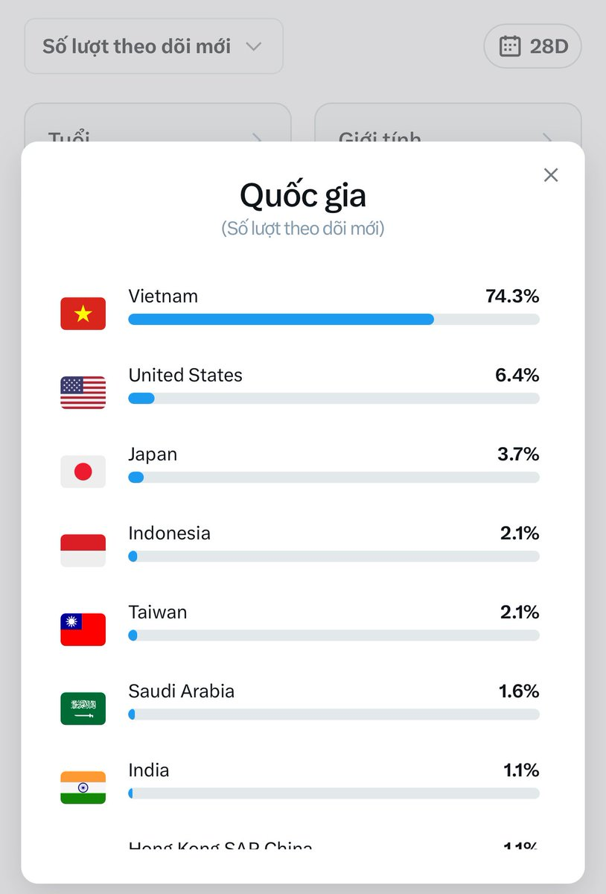

无敌的小白羽大人🍥
@yuerQwQ
@luong4101992 大v🥺🥺

nbaluong (✱,✱)
@luong4101992
28 ngày qua em +7500 lượt fl mới
Thì khoảng 5600 đến từ VN mình ❤️
750 đến từ Mỹ Nhật
Còn lại là khắp nơi 🤣🤣🤣
Anh em cập nhật X lên để xem kĩ thông tin nhé. Bieets đc tệp khách là ai sẽ giúp anh em viết content hút hơn đó.
Good luck ❤️❤️❤️ https://t.co/OsZYI15zDL https://t.co/jpLL4lIQPq